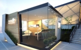

-

- VIA 57 West公寓赢得2016国际高层建筑奖
-
在京津冀城市群协同发展语境下，这座河北小镇，正深刻展现着大都市圈，乃至城市化建设的变革与探索。近年来，随着京津冀一体化的不断推进，特别是在北京
的城市副中心定点通州后，北京的非首都职能正逐步从城六区向“新中心”转移。事实上，从惯例和标准来看，燕郊应当属于北京都市圈的通勤范围以内。根据中国
工程院城市群交通一体化研究课题组定义，都市圈是一个占明显优势的核心城市为中心，以通勤范围维空间区域，由若干城镇组成 - 2018-01-18 阅读量：6